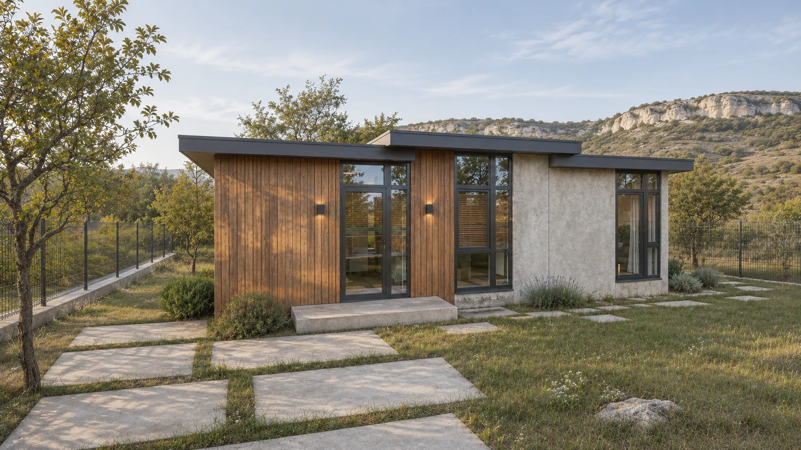
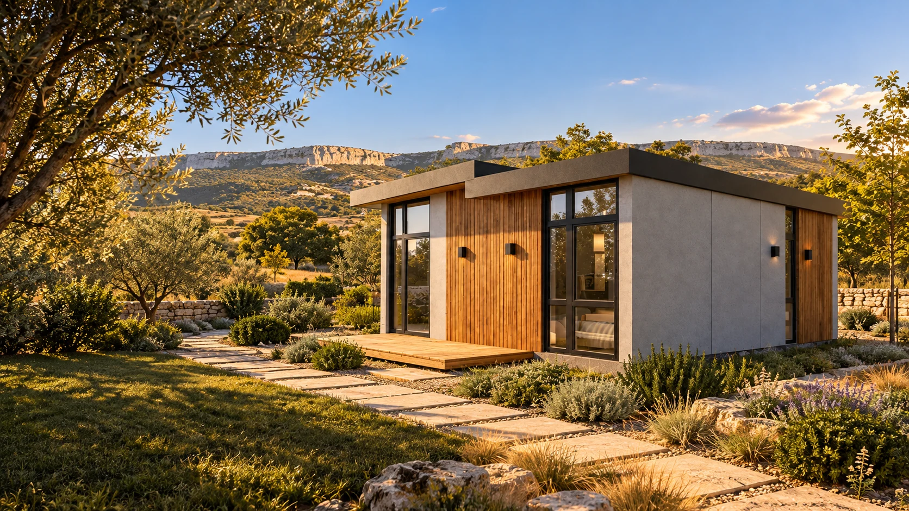
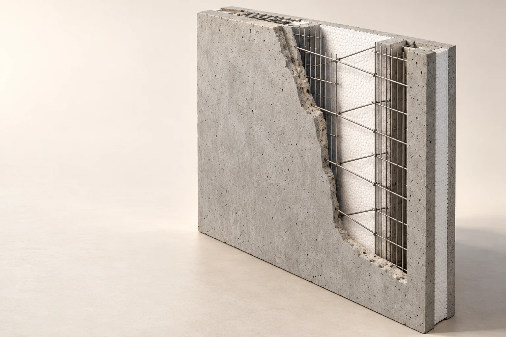
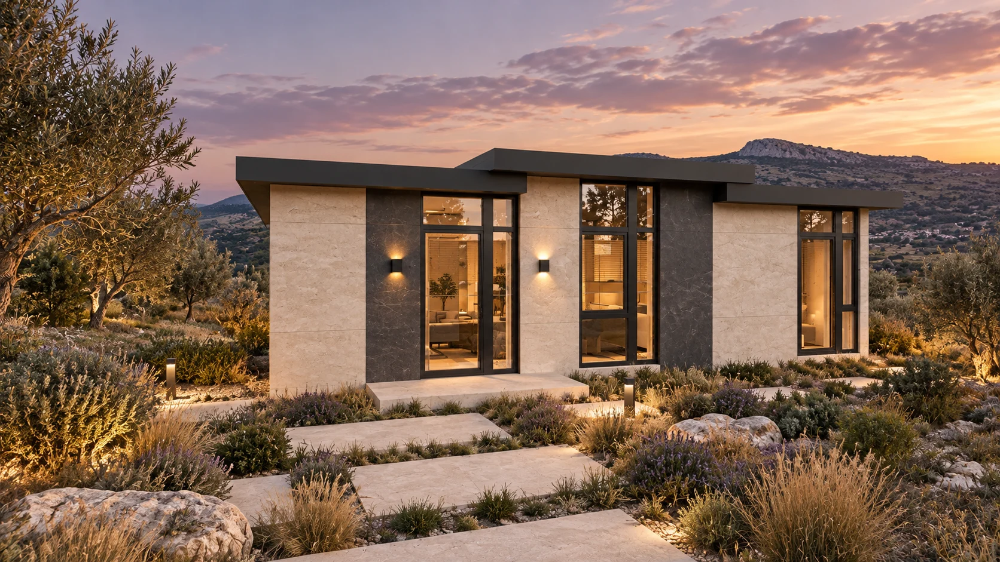
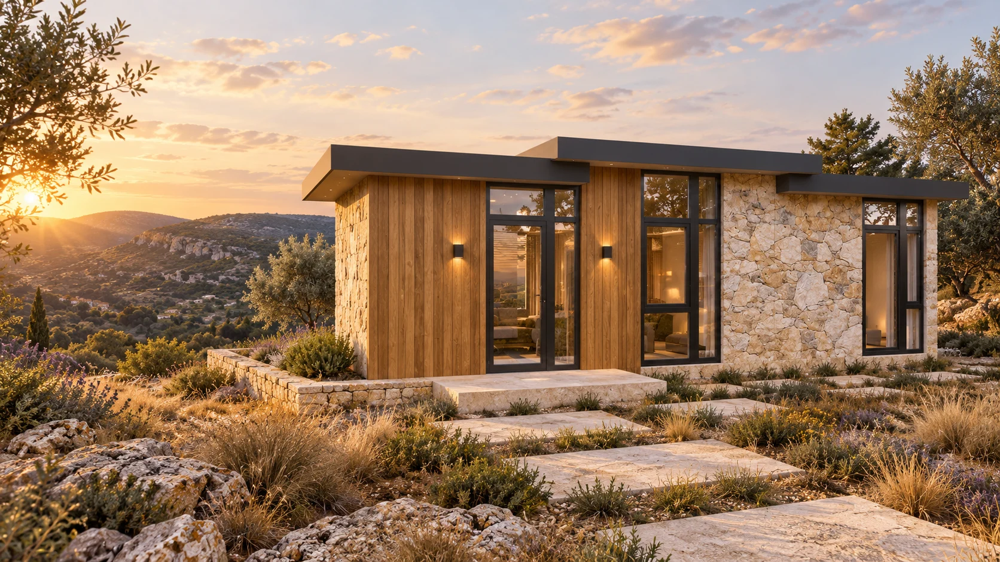
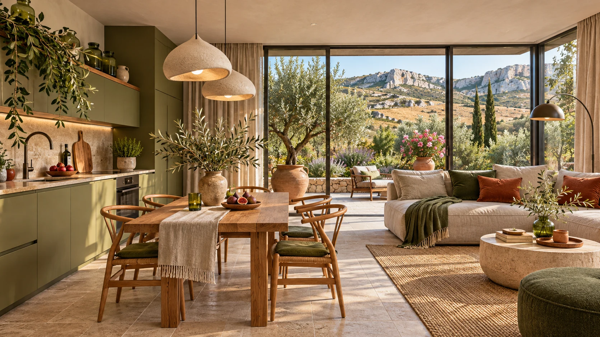
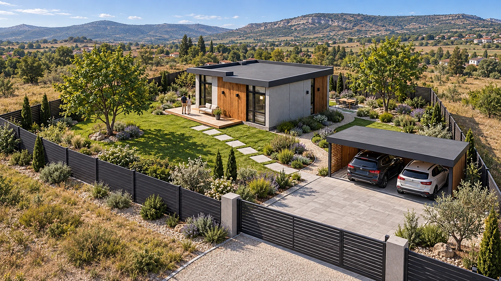
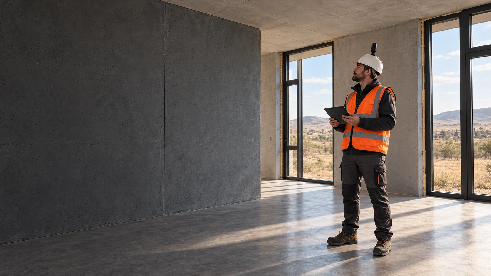

Дневная визуализация проектаДом 89
7,8 млн ₽*Больше жизни за городом
89 м² по внешнему контуру3 спальни2 санузла
Планировка и комплектация ↗
Заводские железобетонные панели.
Ваш проект, комплектация и контроль этапов.

Заводская подготовка, понятная комплектация и монтаж по согласованному проекту.
↗Три спальни, два санузла и общая кухня-гостиная. Планировку и инженерные решения согласуем до производства.

Дневная визуализация проектаБольше жизни за городом

Вариант отделки · визуализацияПространство для всей семьи
* Ценовой ориентир из материалов октября 2026 года. Предчистовая отделка и инженерия; без участка. Актуальная смета и точный состав требуют подтверждения.
Трёхслойная заводская панель. Стена объединяет железобетонные слои и утеплитель; узлы соединения, армирование и крепления задаются рабочим проектом.
Иллюстрация слева показывает принцип стеновой панели. При переключении меняются численные параметры и пояснения, а не рабочая модель изделия.
Оцениваем исходные условия, согласуем основание, планировку, вводы и комплектацию.
Комплектуем панели, организуем доставку и монтаж по проектной последовательности.
Проверяем узлы, фиксируем скрытые работы и передаём дом согласованной готовности.
Камень или керамогранит.
Светлый интерьер или природная палитра.
Терраса и сад как продолжение дома.

01 / ФАСАД Архитектурный характер ↗
02 / ИНТЕРЬЕР Пространство для жизни ↗
03 / УЧАСТОК Всё вокруг дома ↗Концептуальные визуализации. Точный состав определяет проект.

Основание, соединения, герметизация, кровля и инженерия — точки контроля до завершения этапа. Фотофиксация помогает сохранить историю строительства, а приёмку выполняет специалист.
Посмотреть план контроля ↗Основание, панели, кровля, окна и двери — по спецификации проекта.
Согласованные системы и их комплектация. Внешние подключения учитываются отдельно.
Отделка, мебель, техника, терраса и сад — отдельными понятными разделами.
Начнём с проекта, условий участка и комплектации.